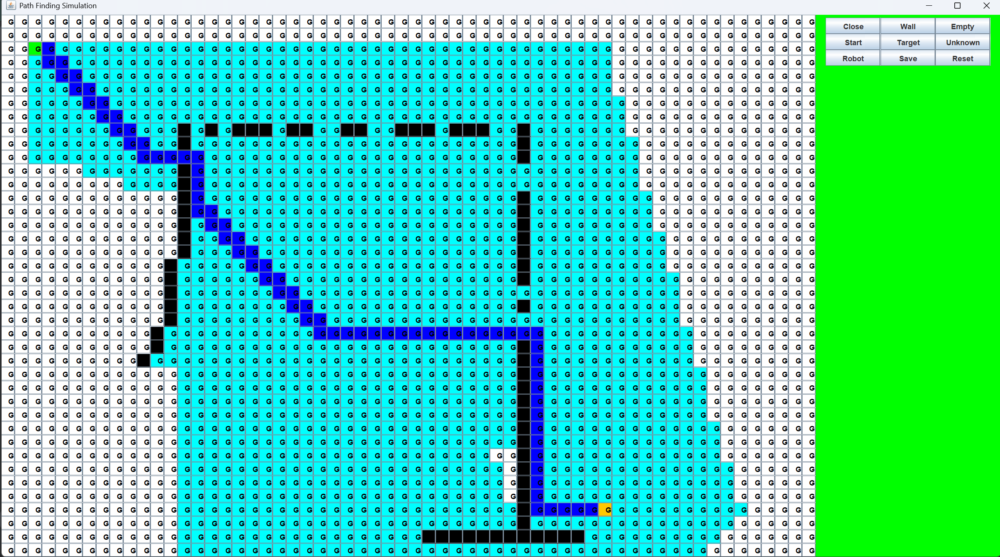

My Projects
Path Finder Simulation

Built with pure Java. Finds shortest path, starts following path, and if an object identified recalculates shortest path and continues from new path.
Tools Used
- Java
- Data Structures
- Algorithms
- A Star
You can check out the GitHub repository for this project from here.
Custom E2E Test Automation Framework
Built customized BDD Cucumber End To End Web Application Functional Test Automation Framework. Using Java, Selenium, Rest Assured Libraries, JDBC, Cucumeber.
Tools Used
- Java
- Cucumber
- Selenium
- Rest Assured Libraries
- SQL
- JDBC
You can check out the GitHub repository for this project from here.
AI ML Course with TensorFlow
Exploring TensorFlow. I follow tutorials from YouTube and FreeCodeCamp like this.
Tools Used
- Python
- TensorFlow
- Neural Network
- AI
- ML
OpenCV Exploration
Exploring OpenCV libraries. I follow tutorials from YouTube and FreeCodeCamp like this.
Tools Used
- Python
- OpenCV
Habit Tracker App
Building a full-stack web application to track and analyze user habits and give recommendations according to data.
I made the design of application and database. Currently I am learning Spring Boot, trying to build API and the framework of the application. Once I complete the project, I plan to host the application on a RaspberryPi (or AWS).
Tools Used
- Java
- Spring Boot
- PostgreSQL
- React
- RaspberryPi (or AWS)
Matrix Calculator (C++)
A command-line matrix calculator built in C++ that performs basic and advanced matrix operations (addition, multiplication, determinant, inverse, etc.).
Tools Used
- C++
Neural Network Visualizer
A tool to visualize forward propagation in neural networks, built with React and Python backend. Animates layers and connections as data flows.
Inspired from Radu Mariescu-Istodor. Here is the link to his original project video.
Tools Used
- Python
- HTML
- JavaScript
- CSS